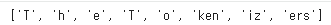

[20차시] 허깅페이스(Hugging Face)
🤖 허깅페이스(Hugging Face)
https://huggingface.co/
- 개념: 전 세계 AI 연구자 및 개발자들이 인공지능 모델, 데이터셋, 웹 데모를 공유하고 협업하는 세계 최대의 오픈소스 AI 플랫폼
- 역할: 복잡한 논문 구현 과정 없이 코드 몇 줄만으로 최고 성능의 오픈소스 AI 모델을 활용할 수 있도록 지원하는 인프라
🌟 4대 핵심 구성 요소
1. Models (인공지능 모델 저장소)
- 내용: 자연어 처리(LLM), 이미지 생성, 음성 인식, 컴퓨터 비전 등 수십만 개의 사전 학습된(Pre-trained) 모델 제공
- 특징: 빅테크 기업(Meta, Google 등)이 대규모 자원을 투입해 만든 고성능 모델(Llama, ViT 등)의 무료 다운로드 및 테스트 가능
2. Datasets (데이터셋 저장소)
- 내용: AI 모델 학습 및 평가에 필요한 텍스트, 이미지, 오디오 등의 다양한 데이터셋 집합소
- 특징: 복잡한 데이터 수집 및 전처리 과정을 생략하고, 표준화된 데이터셋을 코드에 즉시 로드 가능
| 비교 항목 | 허깅페이스 데이터셋 (Hugging Face) | 캐글 (Kaggle) |
| 태생 및 핵심 초점 | NLP 및 대형 생성형 AI (LLM, 멀티모달) | 전통적 머신러닝, Tabular(표) 데이터, 데이터 분석 |
| 주요 사용자 | AI 연구원, LLM 엔지니어, 오픈소스 개발자 | 데이터 분석가, 데이터 과학자, 머신러닝 초심자 |
| 데이터 포맷 | 스트리밍에 최적화된 Hugging Face datasets 포맷 (Arrow 기반) | CSV, JSON, SQLite 등 전통적이고 직관적인 파일 포맷 |
| 핵심 생태계 | Hugging Face Hub (Models, Spaces, Spaces와 연동) | Kaggle Competitions (경진대회), Notebooks (커널 코드) |
3. Spaces (AI 웹 데모 공간)
- 내용: 파이썬으로 구현한 AI 모델을 웹 페이지 형태로 시각화하여 배포하는 공간
- 특징: 별도의 코딩 없이 마우스 클릭만으로 최신 AI 모델의 성능을 직접 체험할 수 있는 환경 제공
4. Documentation (문서 및 라이브러리)
- 내용: 허깅페이스의 핵심 라이브러리인
transformers등의 사용법과 API 명세서가 정리된 공간
- 특징: 전 세계 AI 개발자들의 표준 개발 규격이자 실무 중심의 공식 교과서 역할
💡 딥러닝 학습자 관점의 효용성
- 전이 학습(Transfer Learning) 실습 최적화: 기반 모델을 바탕으로 내 데이터에 맞게 추가 학습시키는 파인튜닝(Fine-tuning)의 원리 이해 및 실전 구현 가능
- 개발자 포트폴리오 구축: 학생들이 수행한 프로젝트의 모델과 데모(Spaces)를 업로드하여 취업 및 진학을 위한 포트폴리오로 활용 가능
- 글로벌 AI 트렌드 파악: 실시간 인기 차트(Trending)를 통해 현재 AI 업계에서 가장 주목받는 기술과 모델 확인 가능
[참고] 실시간 인공지능(AI) 순위
https://artificialanalysis.ai/
데이터셋 토크나이저로 추론하기
1. 구글 코랩(Colab) 노트북과 사용자의 구글 드라이브를 연결(마운트)
from google.colab import drive
drive.mount('/content/drive')2. 자연어 처리에 필요한 필수 패키지 설치
!pip install transformers
!pip install datasets
!pip install accelerate
!pip install ftfy
!pip install tensorboard
!pip install Jinja23. 이미지 생성용 diffusers 라이브러리를 깃허브(GitHub)에서 직접 다운로드
!pip3 install git+https://github.com/huggingface/diffusers4. 나만의 BPE 토크나이저 학습 및 추론
from tokenizers import Tokenizer, models, pre_tokenizers, trainerswith open("tokenizer_train.txt", "r") as file:
dataset = [line.strip() for line in file.readlines()]https://drive.google.com/file/d/1NDHh29AMFmYCYwmTTkhrsOp8Qp7HaJlw/view?usp=sharing
tokenizer = Tokenizer(models.BPE())tokenizer.pre_tokenizer = pre_tokenizers.Whitespace()trainer = trainers.BpeTrainer(special_tokens=["[UNK]", "[CLS]", "[SEP]", "[PAD]", "[MASK]"])tokenizer.train_from_iterator(dataset, trainer=trainer)tokenizer.save("tokenizer.json")from transformers import PreTrainedTokenizerFast
fast_tokenizer = PreTrainedTokenizerFast(tokenizer_file="tokenizer.json")
text = "The Tokenizers"
encoded = fast_tokenizer.encode(text)
print(encoded.tokens)

5. 시각화 및 사전 학습된 토크나이저 사용
from tokenizers.tools import EncodingVisualizer
visualizer = EncodingVisualizer(fast_tokenizer._tokenizer)
visualizer(text="The Tokenizers")
from transformers import BertTokenizer
tokenizer = BertTokenizer.from_pretrained("bert-base-uncased")
print(tokenizer.tokenize("The tokenizers"))!pip install --upgrade datasets huggingface_hub
!pip install -U "datasets>=2.18.0" "huggingface_hub>=0.24.0" transformersfrom datasets import load_dataset
from transformers import AutoTokenizer
imdb_dataset = load_dataset("stanfordnlp/imdb")
print(imdb_dataset)
model_name = "distilbert-base-uncased-finetuned-sst-2-english"
tokenizer = AutoTokenizer.from_pretrained(model_name)
sample_text = imdb_dataset["test"][0]["text"]
print(sample_text)I love sci-fi and am willing to put up with a lot. Sci-fi movies/TV are usually underfunded, under-appreciated and misunderstood. I tried to like this, I really did, but it is to good TV sci-fi as Babylon 5 is to Star Trek (the original). Silly prosthetics, cheap cardboard sets, stilted dialogues, CG that doesn't match the background, and painfully one-dimensional characters cannot be overcome with a 'sci-fi' setting. (I'm sure there are those of you out there who think Babylon 5 is good sci-fi TV. It's not. It's clichéd and uninspiring.) While US viewers might like emotion and character development, sci-fi is a genre that does not take itself seriously (cf. Star Trek). It may treat important issues, yet not as a serious philosophy. It's really difficult to care about the characters here as they are not simply foolish, just missing a spark of life. Their actions and reactions are wooden and predictable, often painful to watch. The makers of Earth KNOW it's rubbish as they have to always say "Gene Roddenberry's Earth..." otherwise people would not continue watching. Roddenberry's ashes must be turning in their orbit as this dull, cheap, poorly edited (watching it without advert breaks really brings this home) trudging Trabant of a show lumbers into space. Spoiler. So, kill off a main character. And then bring him back as another actor. Jeeez! Dallas all over again.
나는 SF 장르를 사랑하며 많은 것을 감수할 용의가 있다. SF 영화나 TV 프로그램은 대개 제작비가 부족하고, 저평가되며, 오해를 받곤 한다. 나는 이 작품을 좋아하려고 정말, 정말 노력했다. 하지만 이 작품과 훌륭한 TV SF물의 관계는 마치 '바빌론 5(Babylon 5)'와 '스타 트렉(오리지널)'의 관계와 같다. 유치한 분장, 싸구려 판판한 세트장, 어색한 대사, 배경과 따로 노는 CG, 그리고 고통스러울 정도로 평면적인 캐릭터들은 'SF'라는 배경만으로는 극복할 수 없다. (여러분 중에는 바빌론 5가 훌륭한 TV SF물이라고 생각하는 분들이 분명 계실 것이다. 하지만 그렇지 않다. 진부하고 감흥도 없다.) 미국 시청자들은 감정 교류나 캐릭터의 성장을 좋아할지 모르겠지만, SF는 스스로를 너무 진지하게 다루지 않는 장르다(스타 트렉처럼 말이다). 중요한 주제를 다룰 수는 있어도, 이를 진지한 철학처럼 다루지는 않는다. 이 작품의 캐릭터들은 단순히 어리석은 게 아니라 생기 자체가 없어서 몰입하기가 정말 어렵다. 캐릭터들의 행동과 반응은 뻣뻣하고 뻔해서 보는 것 자체가 고통스러울 때가 많다. '어스(Earth)'의 제작진도 이 작품이 쓰레기라는 걸 알고 있다. 그러니까 사람들이 계속 시청하게 만들려고 항상 "진 로든버리(Gene Roddenberry)의 어스..."라고 강조하는 것이다. 진 로든버리의 유골이 궤도에서 돌다가도 벌떡 일어날 판이다. 이 지루하고, 싸구려 같고, 편집도 엉망인(광고 시간 없이 연달아 보면 이 점이 정말 뼈저리게 느껴진다) 트라반트(구동독의 삼류 자동차) 같은 드라마가 우주를 향해 무겁게 발걸음을 옮기고 있으니 말이다. 스포일러. 그러니까, 주요 캐릭터를 죽여 놓고는 다른 배우를 써서 다시 살려낸다고? 제발! 드라마 '달라스(Dallas)'의 재림이다.
6. 파이프라인 활용 감성 분석
사전 학습된 인공지능 모델을 가져와 실제 데이터의 긍정/부정을 판단(추론)하고, 데이터셋을 딥러닝 프레임워크(PyTorch) 형식으로 가공함.
from transformers import AutoModelForSequenceClassification, pipeline
model = AutoModelForSequenceClassification.from_pretrained(model_name)sentiment_analysis_pipeline = pipeline("sentiment-analysis", model=model, tokenizer=tokenizer)result = sentiment_analysis_pipeline(sample_text)
print("Sample Text:", sample_text)
print("Sentiment Analysis Result:", result)Sentiment Analysis Result: [{'label': 'NEGATIVE', 'score': 0.999616265296936}]
감성 분석 결과:[{'label': '부정적(NEGATIVE)', 'score': 0.999616265296936}]
이 글은 99.96% 확률로 확실한 부정적 리뷰다
[추가 실습] 본인의 리뷰에 대한 감성 척도 확인
외국영화 / 영어 감상평 / distilbert-base-uncased-finetuned-sst-2-english 모델
# 라이브러리 및 시각화 도구 불러오기
from transformers import pipeline
import matplotlib.pyplot as plt
# 감성 분석 파이프라인 로드 (SST-2 데이터셋으로 학습된 DistilBERT 활용)
# 가장 가볍고 정확한 모델 지정
model_name = "distilbert-base-uncased-finetuned-sst-2-english"
classifier = pipeline("sentiment-analysis", model=model_name)
# 분석하고 싶은 영화 리뷰 영어로 직접 수정 입력
movie_title = "Michael"
my_review = "Jaafar Jackson's performance is incredibly spot-on. It feels like watching the King of Pop himself on stage."
# AI 모델로 감성 분석 수행
outputs = classifier(my_review)
result = outputs[0]
# 5. 결과 가공 및 감성 척도(Sentiment Scale) 계산
# AI는 0~1 사이의 확률(Score)을 주고 이를 0~100% 척도로 변환함.
label = result['label']
confidence = result['score'] * 100
# 최종 감성 점수(Scale): 부정이면 마이너스(-), 긍정이면 플러스(+) 점수 부여
# -100(극단적 부정) ~ 0(중립) ~ +100(극단적 긍정) 척도 생성
if label == "NEGATIVE":
sentiment_scale_score = -confidence
else:
sentiment_scale_score = confidence
# 결과 출력
print(f"[영화 제목]: {movie_title}")
print(f"[선택한 리뷰]: {my_review}")
print("-" * 50)
print(f"[AI 분석 결과]: 이 리뷰는 {confidence:.2f}%의 확률로 [{label}] 입니다.")
print(f"[정량적 감성 점수]: {sentiment_scale_score:.2f}점 (-100점 ~ +100점 범위)")
print("-" * 50)
# 감성 척도 시각화
plt.figure(figsize=(8, 2))
# 감성 점수에 따라 색상 변경 (긍정은 하늘색, 부정은 코랄색)
bar_color = '#4ea8de' if sentiment_scale_score > 0 else '#e63946'
# 가로 막대 그래프 그리기
plt.barh(['Sentiment Scale'], [sentiment_scale_score], color=bar_color, height=0.5)
plt.axvline(x=0, color='black', linewidth=1.5, linestyle='--') # 중립 기준선(0점)
# 그래프 서식 설정
plt.xlim(-100, 100)
plt.xlabel('Negative (-100) <--------- Neutral (0) ---------> Positive (100)')
plt.title(f"AI Sentiment Analysis Scale for '{movie_title}'")
plt.grid(axis='x', linestyle=':', alpha=0.6)
# 그래프 화면 표시
plt.tight_layout()
plt.show()한국영화 / 한국어 감상평 / WhitePeak/bert-base-cased-Korean-sentiment 모델
https://drive.google.com/file/d/1jYmxGmCzhreqP2NYy4niFsZ2tNts0t67/view?usp=sharing
# 한글 폰트 설치 및 환경 설정
# 나눔 폰트 패키지 설치
!sudo apt-get install -y fonts-nanum
!fc-cache -fv
# matplotlib 시스템 폰트 매니저 동기화 코드
import matplotlib.pyplot as plt
import matplotlib.font_manager as fm
import os
font_path = 'NanumGothic.ttf'
fm.fontManager.addfont(font_path)
plt.rc('font', family='NanumGothic')
# 마이너스 기호 깨짐 방지
plt.rcParams['axes.unicode_minus'] = False
# 필요한 라이브러리 임포트
from transformers import pipeline
# 한국어 감성 분석에 특화된 사전 학습 모델 불러오기
# 한국어 리뷰 데이터를 학습한 다국어 BERT 기반 모델 지정
ko_model_name = "WhitePeak/bert-base-cased-Korean-sentiment"
ko_classifier = pipeline("sentiment-analysis", model=ko_model_name)
# 분석하고 싶은 한국 영화 비평 입력하기
korean_movie = "파묘"
korean_review = "초반부 몰입감은 역대급이었는데, 후반부 전개가 살짝 아쉽지만 배우들의 연기력이 모든 걸 커버함!"
# 한글 감성 분석 수행
outputs = ko_classifier(korean_review)
result = outputs[0]
# 결과 매핑 및 척도 계산
# 해당 모델의 출력 형식(LABEL_1 = 긍정, LABEL_0 = 부정)에 맞춰 변환
raw_label = result['label']
confidence = result['score'] * 100
if raw_label == "LABEL_1" or raw_label == "POSITIVE":
clean_label = "긍정 (Positive)"
sentiment_scale_score = confidence
else:
clean_label = "부정 (Negative)"
sentiment_scale_score = -confidence
# 텍스트 결과 출력
print(f"[영화 제목]: {korean_movie}")
print(f"[선택한 비평]: {korean_review}")
print("-" * 50)
print(f"[AI 분석 결과]: 이 비평은 {confidence:.2f}%의 확률로 [{clean_label}] 데이터임.")
print(f"[정량적 감성 점수]: {sentiment_scale_score:.2f}점 (-100점 ~ +100점 범위)")
print("-" * 50)
# 한글 감성 척도 가로 막대 그래프 시각화
plt.figure(figsize=(8, 2))
bar_color = '#2a9d8f' if sentiment_scale_score > 0 else '#e76f51' # 긍정은 청록, 부정은 주황
plt.barh(['감성 척도 (Sentiment)'], [sentiment_scale_score], color=bar_color, height=0.5)
plt.axvline(x=0, color='black', linewidth=1.5, linestyle='--') # 0점 기준선
plt.xlim(-100, 100)
plt.xlabel('강한 부정 (-100) <--------- 중립 (0) ---------> 강한 긍정 (100)')
plt.title(f"영화 '{korean_movie}' 비평에 대한 AI 감성 분석 결과")
plt.grid(axis='x', linestyle=':', alpha=0.6)
plt.tight_layout()
plt.show()